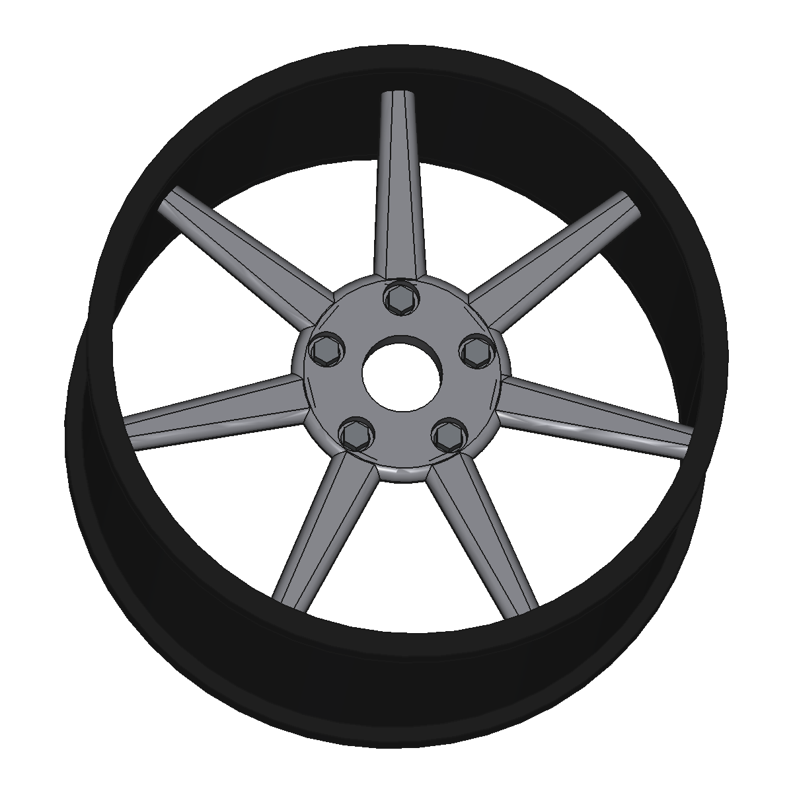
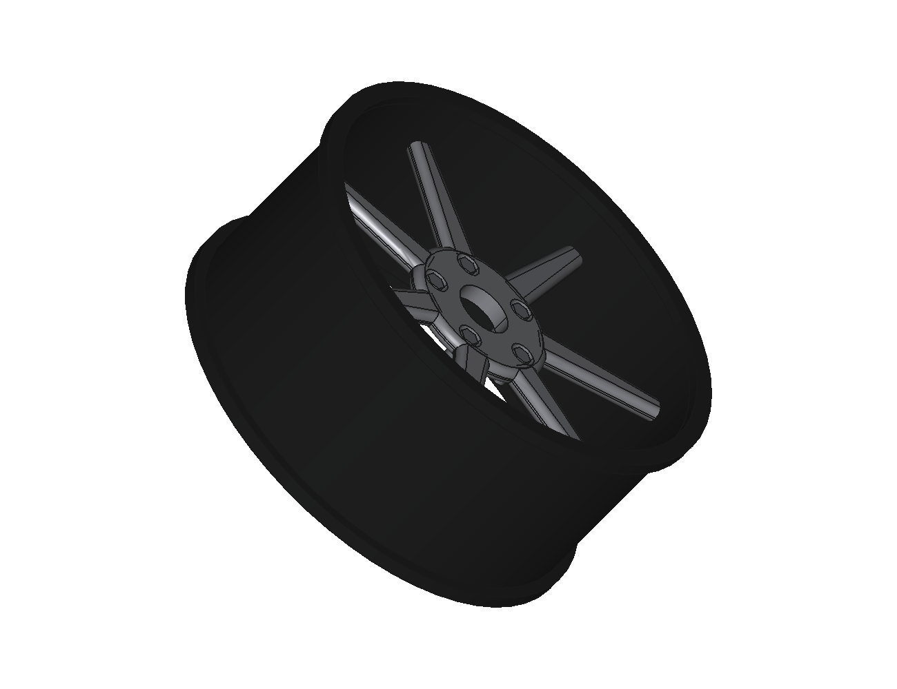
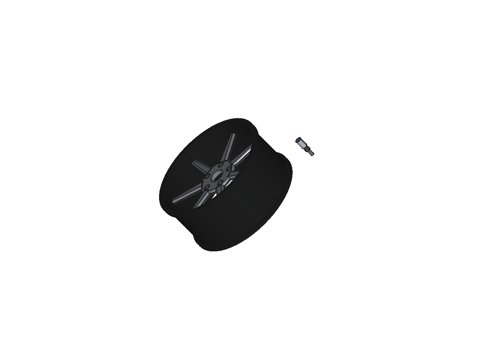
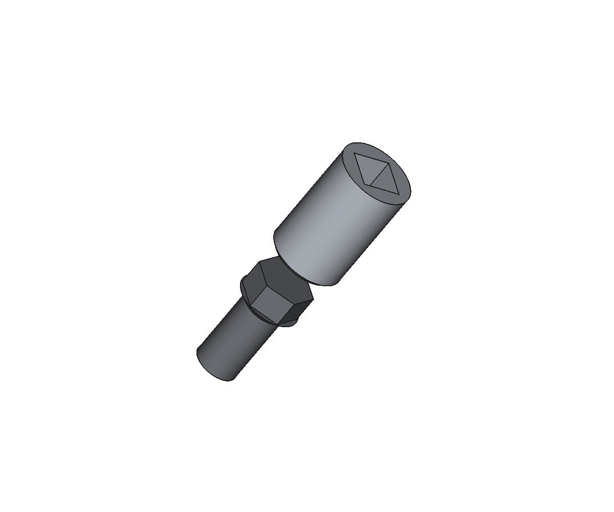

Praca końcowa · CosinusYoung Częstochowa · rok szkolny 2025/2026
Modelowanie, wykonanie i badania prototypu felgi aluminiowej
Projekt parametryczny CAD, wydruk 3D w skali 45% i stanowisko testowe sterowane ESP32 — felga 17×7.5J 5×112 ET35 do samochodu sportowego.
Przewiń niżej ↓ — rozdział 3 zawiera model 3D do obracania w przeglądarce.
1 · Wstęp
Cel pracy: zaprojektować, wykonać i przebadać prototyp felgi aluminiowej przeznaczonej do samochodu sportowego, a następnie zweryfikować geometrię i wyważenie na własnym stanowisku pomiarowym.
Zakres: projekt parametryczny felgi 17×7.5J (PCD 5×112, ET35, otwór centrujący 57,1 mm), analiza wytrzymałościowa w FreeCAD, wydruk prototypu w skali 45%, stanowisko z napędem NEMA 17 sterowanym ESP32 oraz pomiary obrotów, drgań, bicia i prądu.
Uzasadnienie: felga to element bezpieczeństwa i stylu — w autach sportowych i luksusowych liczą się masa, sztywność i technologia produkcji. Prototyp wykonany w druku 3D pozwala tanio sprawdzić geometrię, wyważenie i bicie przed wykonaniem elementu z aluminium.
2 · Teoria felg
Oznaczenia na feldze
| Oznaczenie | Znaczenie | Nasza felga |
|---|---|---|
| 17×7.5J | średnica 17″ i szerokość 7,5 cala (rant typu J) | 17×7.5J |
| PCD | liczba i rozstaw otworów śrub | 5×112 mm |
| ET | odsadzenie: odległość płaszczyzny montażu od środka felgi | ET35 |
| CB | otwór centrujący (pierścień prowadzący piasty) | Ø57,1 mm |
Materiały
Felgi aluminiowe wykonuje się głównie ze stopów A356.0-T6 (odlewy) oraz 6061-T6 (elementy kute). Liczy się stosunek wytrzymałości do masy oraz przewodzenie ciepła od hamulców.
Technologie produkcji
| Technologia | Zalety | Wady |
|---|---|---|
| Odlew niskociśnieniowy | tani, dowolne kształty | porowatość, większa masa |
| Kucie matrycowe | najmocniejsze, najlżejsze | drogi, ograniczone kształty |
| Flow forming | mocne, cienkie ścianki | koszt maszyn |
| CNC (frezowanie) | powtarzalność, detale | długi czas, koszt |
Sprawdź się — quiz 0/6
3 · Projekt 3D
Model wykonany parametrycznie w FreeCAD — wszystkie wymiary pochodzą z arkusza „Parametry", więc zmiana wartości przebudowuje felgę.
Dane techniczne
| Średnica | 17″ (431,8 mm) |
| Szerokość | 7.5J (190,5 mm) |
| PCD / śruby | 5×112, otwór Ø15 |
| ET | 35 mm |
| CB | Ø57,1 mm |
| Ramiona | 7 (zaokrąglone R8) |
| Kieszenie śrub | Ø26×10 + gniazdo R14 |
| Skala wydruku | 45% → Ø204 mm |
Pliki do druku
4 · Stanowisko testowe
Cel: zamocować prototyp felgi i wprawić go w ruch, mierząc parametry. Napęd: silnik krokowy NEMA 17 + sterownik DRV8825/TMC2209, sterowanie ESP32 (Wi-Fi + strona z regulacją), pomiar: obroty (Hall), drgania (MPU6050), bicie, prąd (INA219).
Mechanika: tarcza montażowa dopasowana do felgi (prowadzenie Ø25,7; 5 otworów PCD 50,4 w skali 45%), wał Ø8, dwa łożyska 608, podstawa z mocowaniem silnika i naciągiem paska.
Lista zakupów i budżet → rozdział 5.
5 · Części i budżet
Odznacz to, co już masz — kalkulator policzy, ile zostaje do kupienia.
Ceny orientacyjne (rynek PL, 2026). Filament liczony jak 1 kg PETG.
6 · Plan pracy
7 · Galeria




8 · O projekcie
Narzędzia: FreeCAD 1.0 (model + FEM), OrcaSlicer (druk), Blender (rendery), KiCad (płytka), ESP32 + Arduino (firmware), Git/GitHub (wersje), Render (hosting).
Wsparcie AI: model i firmware powstały przy wsparciu asystenta AI (opencode + modele DeepSeek/Ollama) — opisane w załączniku jako narzędzie inżynierskie.
Repozytorium: GitHub · hosting: Render. Strona jest rozwijana razem z pracą.